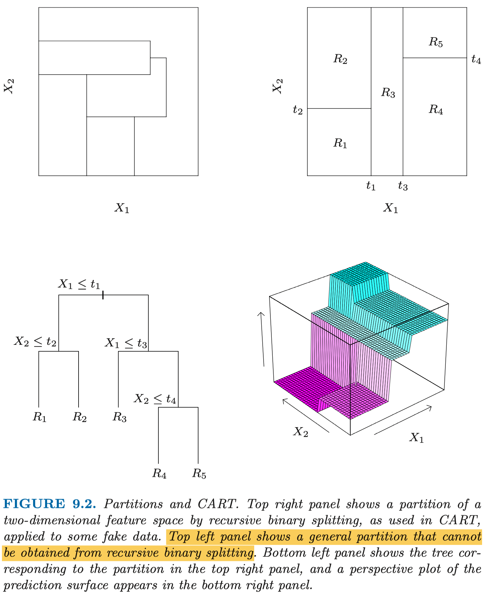

ESL 9.2: Tree-Based Methods
9.2.1 Background
树方法将特征空间分割为不同区域，然后用一个简单的模型（比如常数）来拟合每个区域。
考虑一个简单的回归问题。特征是二维的 \(X_1\) 和 \(X_2\)，响应是实数 \(Y\)。我们可以把特征空间分区，每个区赋予一个常数作为响应的估计值。
如下图所示，左上角的子图是一种复杂的情形，因为每个区域很难描述。我们先研究类似于右上角的子图的简单情形，它可以表示成一个简单的二叉树（左下），每个叶子节点就是其分区结果，可以赋予一个常数。

9.2.2 Regression Trees
现在我们可以将问题转化为如何构造一个 regression tree。假设我们的特征有 \(p\) 维，共有 \(N\) 个观测样本。我们需要找到一个算法能够自动决定在哪些特征的哪些值进行分割，以此决定 regression tree 的形状。如果分支数太多，显然会存在过拟合的问题。但是分支数太少又可能忽略掉重要的结构。
可调参数：
- 每个叶子节点最大样本数（用于 Step 1 终止条件）
Step1. 递归构造二叉树
Step 1.1 递归切分
假设我们对第 \(j\) 个特征选择了分割点 \(s\)，则分割成的两个部分为：
我们的目标是选择 \(j\) 和 \(s\) 让两个部分的残差平方和 (RSS) 最小，即求解如下问题：
其中预测值的估计 \(\hat{c}\) 为各部分 \(y_i\) 的均值。
假设 \(X_j\) 在样本中一共有 k 个不同的值，则显然最多有 k-1 种分法。可以依次尝试找到 \(s\)。这样我们就确定了一组 \((j, s)\) 组合。该组合将数据分为两部分，我们再对每一个部分重复上述操作。
Step1.2 终止条件
在 step 1.1 的每次切分之后，我们需要对每个部分判断是否停止切分。如果直接用 sum-of-squares 变小的幅度作为终止条件，可能会导致结果不理想。因为某次分割后 sum-of-squares 变化不大，可能它的后续分割能极大降低 sum-of-squares。
因此，我们采用 限制叶子节点样本数 的方法作为终止条件。如果分割后的节点样本数是否低于某个给定的值（例如 5）则停止，否则重复 step 1.1 递归地进行切分。
这样的结果是我们得到了一个可能 过拟合 的树。比如，某一类别的数据实际有 8 个，但是我们叶子节点的样本数上限设为了 5。因此，我们需要进行剪枝，即合并一些节点。
Step2. 剪枝
剪枝的目的是在总节点数以及每个节点的样本的 RSS 中取一个较好的平衡。因此我们定义“复杂度成本” (cost-complexity)：
其中：
- \(|T|\)：剪枝后的树 T 的节点数
- \(\text{RSS}_m\)：第 m 个节点的残差平方和
- \(\alpha\)：节点个数权重，即复杂度成本，如果设为 0 则不进行剪枝
显然，对每个\(\alpha\) 的取值，我们都有一个唯一确定的树 \(T_\alpha\) 使 \(C_\alpha (T)\) 最小。
Step 2.1 交叉检验法确定 \(\alpha\)
我们可以通过调节 \(\alpha\) 来决定剪枝后的模型复杂度（节点数）。 \(\alpha\) 越大，模型越简单，越不精确。\(\alpha\) 太小则会造成过拟合。
为了确定合适的 \(\alpha\) 我们可以把数据的 1/5 或者 1/10 留作检验数据，剩余数据作为训练数据。然后寻找使检验数据的预测误差最小的 \(\hat{\alpha}\)。
Step 2.2 最弱连接法剪枝
我们从对减少 \(\text{RSS}\) 贡献最小的分叉点开始合并节点，直到我们仅剩一个根节点。我们记录这个过程中生成的每一个树（有限集），并且计算其 \(C_{\hat{\alpha}} (T)\)，最小的树就是最终结果 \(T_{\hat{\alpha}}\)。
9.2.3 Classification Trees
对于回归问题，我们希望最小化残差，即样本与均值的差的平方和：
对于分类问题，我们的目的是使样本正确分类的概率最高。我们定义某 叶子节点 所圈定的区域为 \(R_m\)，该节点上共有 \(N_m\) 个样本。我们定义节点的“纯洁度”为：
它表示在节点 m 中第 k 类样本的比例。我们将这个区域内划分给占比最高的类型， 即 \(k(m) = \mathop{\arg \max_k \hat{p}_{mk}}\)。
我们可以得出对于节点 m 的 loss function：
- （不可导）误分类，错误判断节点 m 的某些样本属于 k 类：
对于 2 分类问题，有 \(Q_m(T) = 1 - \max(p, 1-p)\)。
- （可导）Gini 指数，节点 m 上所有类别的不纯度与纯洁度之积的和。
对于 2 分类问题，有 \(Q_m(T) = 2p(1-p)\)。
- （可导）Cross-entropy，交叉熵。
对于 2 分类问题，有 \(Q_m(T) = -p \ln p - (1-p) \ln(1-p)\)。
9.2.4 Other Issues
CART (Classification And Regression Tree) 模型的优势在于：
- 概念简单
- 可解释性强
它的缺陷在于：
- variance 比较大，训练数据上很小的改变可能导致最终生成的树差异巨大。其原因是由于树本身的层级结构，导致上层的分割会影响下层所有节点。
- 分界面不光滑。
- 难以建模加性结构。例如，我们有一个简单的函数:
不同于加性模型，由于树模型没有给予“加性”的假设，我们需要足够多的训练数据才能使其偶然捕获到这种加性结构。
9.2.5 Spam Example
我们同样用上一章中的垃圾邮件分类作为例子。
for train_index, test_index in KFold(n_splits=5,shuffle=True,random_state=1).split(X):
# print("TRAIN:", train_index, "TEST:", test_index)
trainX, testX = X.loc[train_index], X.loc[test_index]
trainY, testY = y.loc[train_index], y.loc[test_index]
model = tree.DecisionTreeClassifier().fit(trainX, trainY)
print(f"CART accurracy: {model.score(testX, testY)}")
pd.DataFrame(model.feature_importances_,
index=model.feature_names_in_,
columns=["importance"]).sort_values(by="importance", ascending=False)
其分类准确率与线性回归相似，不如 additive model。
CART accurracy: 0.9196525515743756
CART accurracy: 0.8978260869565218
CART accurracy: 0.9195652173913044
CART accurracy: 0.933695652173913
CART accurracy: 0.9152173913043479
我们可以看到其前十的 feature importance：
importance
char_freq_$ 0.340080
word_freq_remove 0.158076
char_freq_! 0.084968
word_freq_hp 0.058652
capital_run_length_total 0.045410
capital_run_length_longest 0.036924
word_freq_edu 0.024785
word_freq_free 0.024647
word_freq_you 0.021009
word_freq_george 0.019951
还是非常符合直觉的。